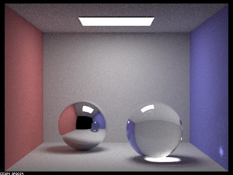
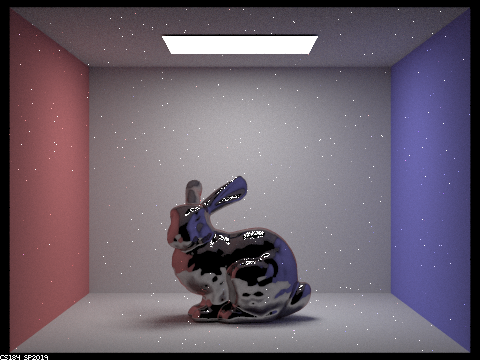
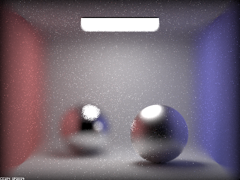

CS 184: Computer Graphics and Imaging, Spring 2019
Project 3-2: Pathtracer 2
Z Wang
This content can be found on my Github Page: zchickenwang.github.io.
Overview
In the last project, we developed the fundamentals of ray-tracing; here, we'll expand on that foundation and build out
some different features.
We'll start off with generalizing to different surface interactions. By accounting for glossy and transparent materials,
we'll be able to render much more complex scenes with materials that are both common and visually rich.
Then we'll move to modeling microfacet materials, thus giving more detail to our surfaces. By changing microfacet parameters,
we'll be able to model a variety of different materials to a much finer degree.
Next we'll explore environment lighting, which gives the power to model scenes with natural light. We'll be able to capture and
use texture maps of different environments, placing objects realistically within them.
Lastly, we'll cover depth of field by expanding our camera model to adopt a thin-lens approximation. This will let us control
focus within our rendered images.
Part I: Mirror and Glass Materials
Ray Generation
First we'll complete the implementations of reflective and transparent surfaces. Perfect reflection means
the incoming and outgoing rays are mirrors of each other across the surface normal. With refraction, we first use
Schlick's Approximation of the Fresnel term to decide between following the path of reflection or transmission.
If it's the latter, then we can find the refracted direction using Snell's Law.
Results
Here's a scene with a mirror and glass ball. We'll cap the max ray depth at certain levels to see what artifacts
successive bounces will introduce.
At 0 depth, only light which is emitted directly into the camera will be captured. This is the light in the ceiling.
At depth 1, rays from the light source can bounce once (on the walls, floor, etc.) before arriving at the camera.
Thus, the room gets illuminated. Note however the ceiling remains dark, as well as the two balls (whose irradiance
depends on further bounces of either reflection or refraction).
At depth 2, the ceiling is illuminated because rays can bounce first off the rest of the room, go back to the ceiling,
then go toward the camera. The mirror ball becomes reflective for the same reasons, and the glass ball is partly-illuminated
from rays which reflect into the light, as well as ones which come from the light source and refract twice to go through the ball.
At depth 3, we get to see the transmission rays which go through the mirror ball and hit some diffuse surface before arriving
at the light source. This significantly illuminates the glass ball. We also see the specular reflection on the glass ball on the
mirror ball's surface.
At depth 4, the glass ball's reflection in the mirror ball turns bluish because light rays that bounce off the blue wall, trasmit
through the glass ball, and then reflect off the mirror ball into the camera take 4 bounces. We can also see a bright spot underneath
the glass ball--this is the reflection of the source light off of the mirror ball. These reflections transmit through the glass ball
onto the floor.
At depth 5, the floor reflection underneath the glass ball becomes visible in it's mirror image. This reflection can also
reflect further off of the right wall before hitting the camera, so a light becomes visible there.
Past depth 5, improvements begin to diminish. Later depths add more smoothness and account for more and more of the
infinitely-recursive light rays.
These renderings use 256 samples/pixel and 4 samples/light.
|
1a. Max ray depth = 0.
|
1b. Max ray depth = 1.
|
|
1c. Max ray depth = 2.
|
1d. Max ray depth = 3.
|
|
1e. Max ray depth = 4.
|

1f. Max ray depth = 5.
|
|
1g. Max ray depth = 100.
|
Part II: Microfacet Materials
In order to penetrate the next level of realism, we need to implement microfacet surfaces, or surfaces
which have minute abberations which follow certain distributions depending on the surface material.
Roughness
Let's introduce a term alpha indicating the level of smoothness for a isotropic conductor which only reflects.
As we vary alpha, we can see a mock-gold material change from diffuse to glossy.
The first dragon looks very diffuse: light is spread across the surface, and there are no distinct specular reflections.
As we turn down alpha, the radiance from reflected light appears in smaller and smaller areas, converging toward a pure
reflection off the dragon's surface. Furthermore, areas which once reflected light at grazing angles no longer reflect
toward the light source, but rather out along their surface normal toward the viewer. Since the camera is an empty black
space, we can see surfaces perpendicular to the camera vector turn dark.
These images were rendered with 128 samples/pixel, 4 samples/light, and a max ray depth of 5.
|
2a. alpha = 0.5.
|
2b. alpha = 0.25.
|
|
2c. alpha = 0.05.
|
2d. alpha = 0.005.
|
Sampling
If our microfacet material was perfectly diffuse, then the existing cosine hemisphere sampling approach
would work well. However, if we model the material's surface normal distribution as non-uniform, like with our
Beckmann distribution, then importance sampling becomes more efficient.
Observing the copper bunnies below shows the difference between cosine hemisphere and importance sampling. In cosine hemisphere
sampling, many sampled directions will not be valid (hence all the black). With importance
sampling, we emphasize reflection directions which have high contribution to a point's irradiance. In this way,
the microfacet surface becomes clearer and smoothed out.
These images were rendered with 64 samples/pixel, 1 sample/light, and max ray depth 7.
|
2e. Cosine hemisphere sampling.
|
2f. Importance sampling.
|
Materials
These materials can be defined by their indices of refraction and extinction coefficient at the three major
visible wavelengths (S/M/L, or R/G/B).
In this way, we can introduce new materials fairly easily, like Chromium (see images)! Note that the dragon
looks pretty similar as we didn't change alpha. In 2h, we reduce alpha to 0.01 so the surface appears more glossy.
These images were rendered with 128 samples/pixel, 4 samples/light, and max ray depth 5.
|
2g. Chromium dragon.
|

2h. Chromium bunny.
|
Part III: Environment Light
In the real world, light is often driven not by specific light sources, but by the sky itself, and sun rays'
infinite bounces across the sky. To model this, we can use our environment as a light source itself, one that
is infinitely far away. Once we place objects within an environment, its lighting will contribute to irradiance
on those objects. Environment light allows us to create much more realistic natural-light images, and also
allows using texture maps to define the lighting of a scene.
Sampling
Here as well, sampling comes into play. Uniform hemisphere sampling works best when our texture map has relatively
uniform environment lighting. In order to generalize toward all environment light distributions, we can use importance
sampling on the environment light to emphasize directions which have high radiance.
To do importance sampling, we weight each texel on the environment map by its light value. We can then use 2 random
numbers to index into the 2d map space, picking indices probabilistically. To do this, we create discrete,
cumulative distribution functions across the rows of the texture map, and ones for the columns in each row. Given a random
number, then, we find the index whose cumulative probability first becomes greater than our number.
Results
The first two images show our chosen environment map and its corresponding probability distribution heatmap.
The next four show the difference between uniform hemisphere and importance sampling of the environment lights.
In 3c-d, we see importance sampling greatly reduces noise on the platform surface (which, excluding the specular reflections
on the bunny, compose some of the brightest areas in the image). The bunny's countours are smoothed out, however the dark
areas remain noisy.
In 3e-f, we see how environment light sampling acts in tandem with microfacet materials. While importance sampling reduces
the amount of noise in light areas (on both the platform and bunny), it exacerbates noise in the shadows. This makes sense
because we sample the light areas more, so shadows become represented by too few samples, which means each of these samples ends
up carrying too much weight--thus we see the stark contrast in the shadows. The reflectivity of the surface further adds noise.
All images were rendered with 4 samples/pixel, 64 samples/light, and max ray depth 5.
 3a. Environment map.
3a. Environment map.
|
3b. Environment light probability distribution.
|
|
3c. No microfacet, uniform hemisphere sampling.
|
3d. No microfacet, importance sampling.
|
|
3e. Copper microfacet, uniform hemisphere sampling.
|
3f. Copper microfacet, importance sampling.
|
Part IV: Depth of Field
So far we've been relying on a pinhole model of a camera. This means the world gets focused through a hole
onto the image plane. In this way, everything is in focus, and we do not have depth of field. In order to
leverage more advanced focus techniques, we'll need to adapt our model.
We can use a thin-lens approximation to simulate a camera with an ideal lens. This lens will have some given size
and focal distance, and these parameters will define our depth of field. Increasing the lens size, or aperture, will
shorten our depth-of-field, and increasing focal distance will push back the focal plane (where objects are in focus).
Focus Stack
The first five images show a 'focus stack' of different focal lengths. Aperture is kept at 0.5 to emphasize the focal plane.
As we move the focal point from the front of the scene backwards, note which areas come into focus: we start off with
the focal plane at front of the first ball, and end up at the back of the second ball. Note in particular how the edges
between walls comes into focus, and how the light in the ceiling becomes progressively blurred.
All images were rendered with 256 samples/pixel, 4 samples/light, and max ray depth 5.
|
4a. Focal distance = 4.1.
|

4b. Focal distance = 4.5.
|
|
4c. Focal distance = 4.7.
|
 4d. Focal distance = 4.9.
4d. Focal distance = 4.9.
|
 4e. Focal distance = 5.3.
4e. Focal distance = 5.3.
|
Aperture Stack
These next four images show a gold dragon with different aperture sizes ranging from 0.01 to 0.5. The focal plane is
at the neck of the dragon.
As aperture goes toward 0, the more and more our model resembles a pinhole, and the larger the depth of field becomes.
With the first two images, note that the back walls get blurred. In the third image, the walls get blurred further, and
the tail of the dragon begins to drop out of focus. In the last image, with
the lens at 0.5, almost everything outside of the focal plane loses focus.
All images were rendered with 256 samples/pixel, 4 samples/light, and max ray depth 5.
|
4a. Aperture = 0.01.
|
4b. Aperture = 0.125.
|
|
4c. Aperture = 0.25.
|
4d. Aperture = 0.5.
|